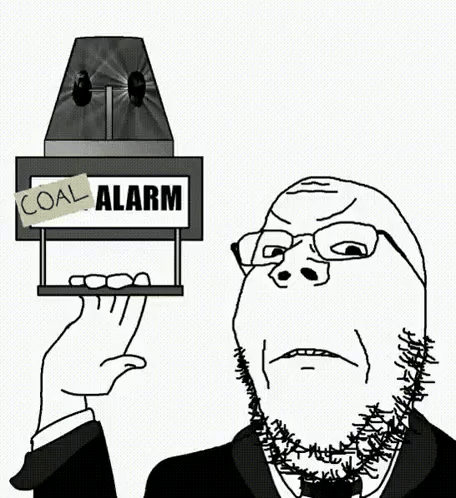

I was in Stillwater on Friday for a maintenance ketamine infusion and my nephew wanted me to help him out on Metroid Prime 4. He's like almost 8 and really wanted to play Prime 4 around Christmas, so I'm not super surprised he got it. I am surprised he was initially interested in it though — he has, like, zero attention span for slower games where you have to think about things. Over Christmas he wanted to try out Pikmin so I loaded up Pikmin 3's two-player campaign and he was bored within 5 minutes (and stopped playing). Which is a shame 😔
Anyways, I had to help him out in the second area in the game. He was in the vulva tower and was following this orb thing, and got stuck because he didn't scan a teardrop in the middle of this room. Which makes sense, it's sort of a spatial investigation thing that he's not ever really utilized in a game before I don't think. But I helped him through it. And then we got to the end of the vulva tower and this ghost alien said that Samus was the "Chosen One" and needed to find five keys to unlock a teleporter.

🗑️🚮
I don't know. I was just in shock the story was that fucking bad. Samus is on an alien planet and the narrative they came up with for her is to collect five keys to unlock a teleporter? Like oh my god. Imagine waiting 18 years for this.
That's all I have to say. It's like relatively minor but it's been stuck in my mind as something so ass it's disqualifying. And I never even saw Myles MacKenzie.